GANTT
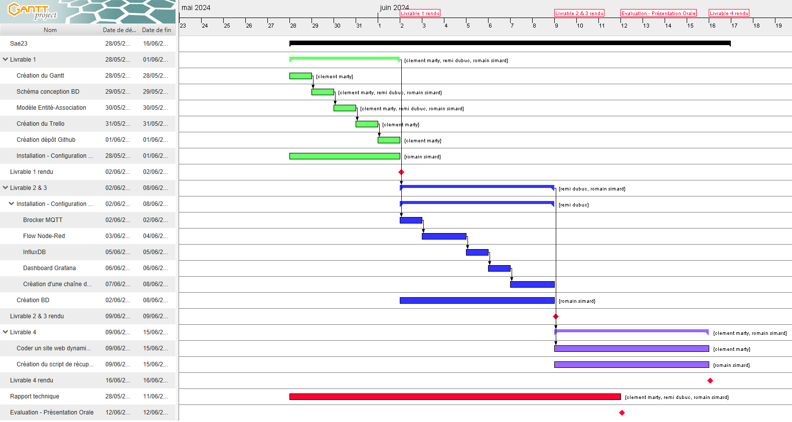
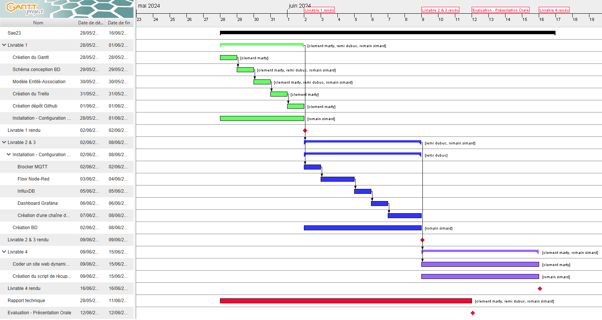
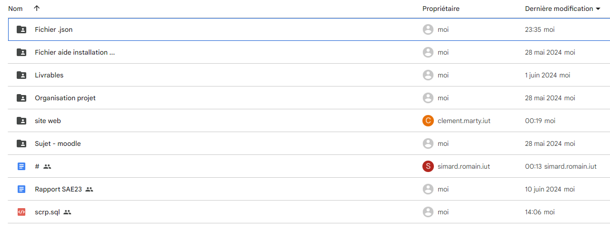
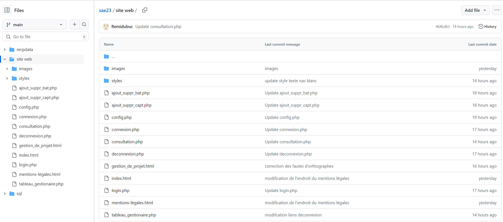
J'ai réalisé le Gantt prévisionnel et final avec l'aide de mon groupe. Pour ce Gantt, il était nécessaire de planifier le temps de réalisation de chaques tâches, mais aussi de savoir qui va réaliser la tâche.
Aucun problème rencontré.
Pour réaliser le HTML j'ai d'abord fait un plan du site afin d'avoir une idée de son organisation. J'ai ensuite fait les éléments qui se retrouve sur différentes pages comme le header, la barre de navigation ainsi que le footer. Je me suis ensuite penché sur les pages les plus importante comme la première page, puis la page de connexion etc. jusqu'à finir par la page de la gestion de projet.
Le CSS a été repris d'une SAÉ faite au premier semestre et amélioré. J'ai tout de même dû reprendre certains détails afin que les éléments qui ont été ajoutés en HTML puisse être propre.
Une fois que le HTML et le CSS étaient finis, j'ai intégré avec l'aide de mes camarades car c'était assez difficiles pour moi seul, le php aux pages qui le demandent. Nous avons d'abord fait la connexion à la base de donnée, puis la fonction qui permet d'autoriser l'accès respectivement à leurs pages web si l'utilisateur ou l'administrateur s'est connecté. Par la suite, j'ai fais la fonction qui permet la déconnexion des utilisateurs.
J'ai rencontré plusieurs difficultés durant ce projet, notamment sur le PHP qui n'était pas de tout repos. J'ai passé de longs moments pour essayer de comprendre comment réaliser la connexion à la base de donnée ainsi que la manière de faire en sorte que lorsqu'un utilisateur ou un administrateur se connecte, il soit renvoyé sur la bonne page. Après de longues recherches sur Internet, j'ai compris qu'il me fallait plusieurs fichiers différents. Pour chaque action réalisée qui doit faire appel à du php, plusieurs fichiers sont appelés afin de se connecter à la base de données, se connecter en utilisateur, voir qui est connecté, et même se déconnecter.
Durant cette SAE23, j'ai installé le serveur xampp, créé la table SQL via phpMyAdmin, la création d'un script récupérant les données MQTT via PHP pour les envoyer sur notre base de données, l'affichage des différentes valeurs récupérées dans la base de données grâce à un script PHP et enfin le code PHP calculant les moyennes, le minimum et le maximum en fonction du type de données (CO2, température, etc.).
Pour la réalisation des différentes tables comme batiment, capteur, mesure et administration, je me suis beaucoup aidé du diaporama de présentation de la SAE 23 à la slide 11 nommée *Contraintes conceptuelles de la BD*. Pour le type de valeur (varchar, int, etc.), nous nous sommes concertés pour savoir ce qui irait le mieux. Mais nous avons quand même dû réaliser certaines modifications tout au long du projet, par exemple les colonnes avec leur type de caractère et leur nombre maximum.
Aucun problème rencontré.
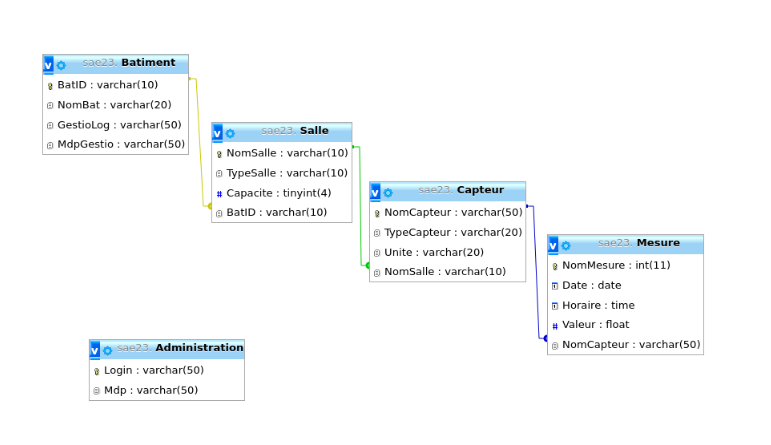
En ce qui concerne le script bash, je me suis inspiré du script de récupération de la SAE 15. J'ai dû améliorer certains points, comme à propos du stockage des données. J'ai donc au départ commencé avec script bash puis je me suis penché sur un script PHP suite à de nos nombreux problèmes incompréhensibles.
Pour le PHP qui permet d'afficher les mesures dans des tableaux, j'ai fait en sorte d'avoir 3 affichages différents. Une version du tableau pour les visiteurs qui voient juste la dernière valeur de chaque capteur, une autre pour les gestionnaires de bâtiment qui voient seulement les capteurs de leur bâtiment mais toutes les valeurs. Enfin, il y a la table d'administrateur qui voit toutes les mesures de tous les capteurs dans chaque bâtiment. J'ai donc d'abord réalisé une requête SQL via le PHP pour récupérer les valeurs nécessaires. Ensuite, je crée une boucle qui ajoute des colonnes à un tableau tant qu'il y a des mesures.
Au niveau des problèmes, j'en ai rencontré un seul sur cette partie, qui est le fait de savoir quel gestionnaire est connecté pour récupérer les valeurs qui appartiennent à son bâtiment. Avec l'aide de mon coéquipier qui a effectué le système de connexion sur le site web, nous avons enregistré le login de la personne qui se connecte dans une fonction. Enfin, dans la requête SQL, je devais préciser le fait de vouloir récupérer les données appartenant au bâtiment auquel est lié le login.
Lors de la réflexion pour le calcul des métriques, j'avais plusieurs possibilités, mais la plus simple était de relever les différentes métriques telles que le minimum, le maximum et la moyenne au moment de la requête SQL. Ensuite, avec une boucle "while" pour afficher les valeurs calculées et récupérées pour les différents types.
Aucun problème rencontré.
Mon plus gros problème était celui des requêtes SQL pour la jonction de tables afin de pouvoir afficher les données qui sont dans les tables. De plus, j'ai eu quelques problèmes avec les sessions, mais je me suis tout de même aidé du TP R209.
Durant cette SAE23, j'ai travaillé sur la solution site dynamique utilisant des dockers. Pour cela, j'ai manipulé les dockers suivants: influxdb, grafana et nodered.
Node-RED est un outil de programmation visuelle open source qui permet de créer rapidement des applications IoT (Internet des objets) et des workflows basés sur des nœuds interconnectés. Il fournit une interface graphique conviviale pour connecter et gérer des flux de données entre différents appareils et services.
Dans notre cas, je m'en suis servi afin de récupérer les données envoyées par le broker de l'IUT et les manipuler afin d'en extraire ce que l'on veut tel que le type de capteurs, sa valeurs, la salle, etc... Vous pourrez voir ci-dessous les différents bâtiments que j'ai choisi (GIM , RT et Extérieur (local-vélo)) et les capteurs de co2, température et d'humidité.
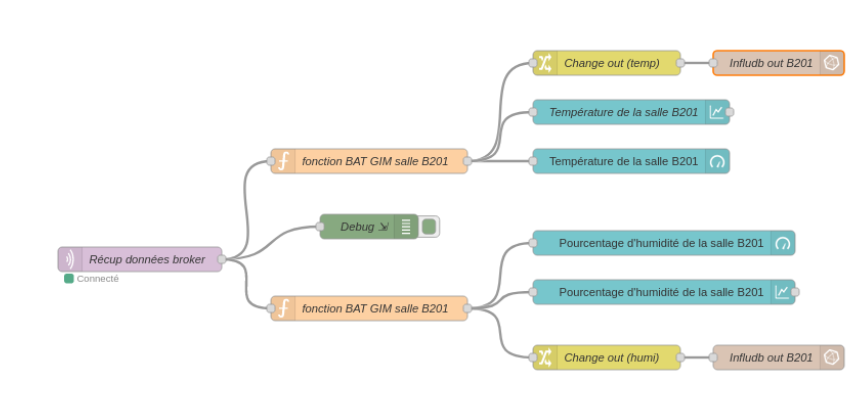
Nous pouvons également, grâce aux noeuds "dashboard", afficher les différentes données extraites sur des dashboard:
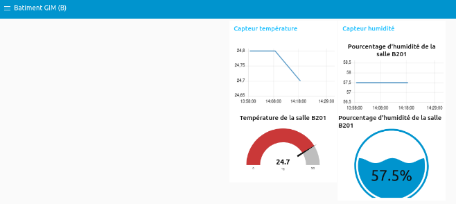
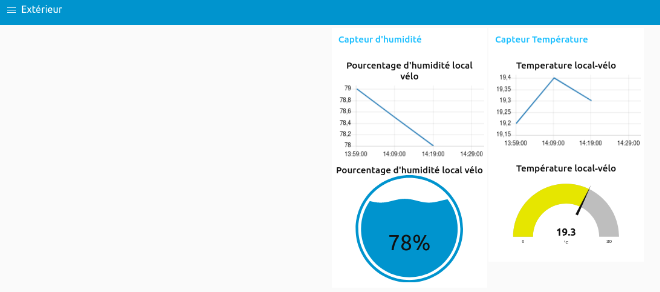
InfluxDB est une base de données open source conçue spécifiquement pour capturer, stocker et interroger efficacement de grandes quantités de données temporelles générées par des applications IoT, des systèmes de surveillance, des événements en temps réel et d'autres sources de données qui évoluent dans le temps.
Dans notre cas, je m'en suis servi afin de stocker ce que nodered récupérait des données du broker de l'IUT dans une base de donnée :
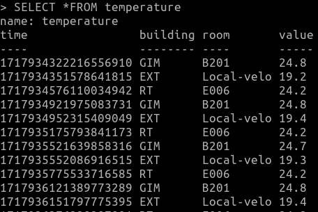
Grafana est une plateforme open source de visualisation et de monitoring des données. Elle permet de créer des tableaux de bord interactifs et personnalisables pour afficher et analyser des métriques, des logs et d'autres types de données en temps réel.
Dans notre cas, je m'en suis servi pour récupérer ce que contenait la base de donnée Influxdb et l'afficher sous forme de plusieurs graphiques assez esthétiques:
Réseaux et Télécoms (RT) :
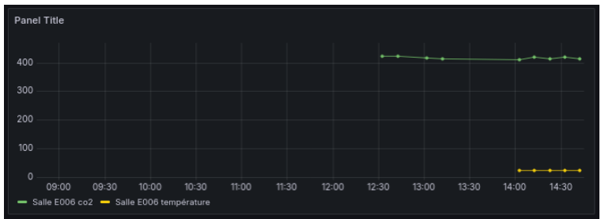
Génie Industriel et Maintenance (GIM) :
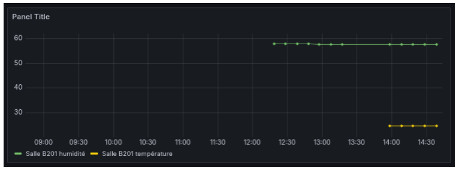
Extérieur (EXT) :
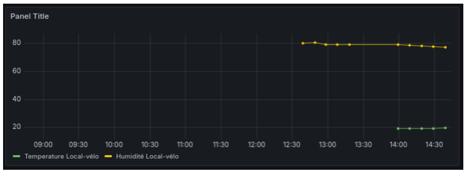
Parmi tous les problèmes rencontrés des erreurs dans les noeuds de nodered, des problèmes pour récupérer les données du broker, mais mon plus gros problème a sûrement été l'installation de la base de donnée influxdb. Je l'avais au départ mal configuré donc les données ne trouvaient pas d'endroit pour être stockées.